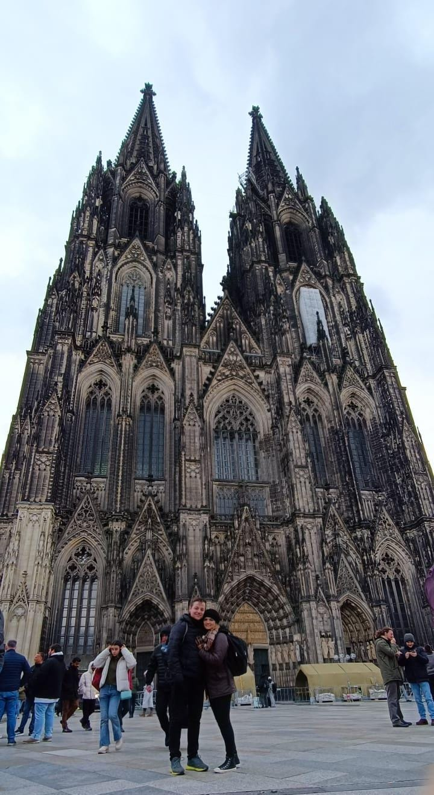
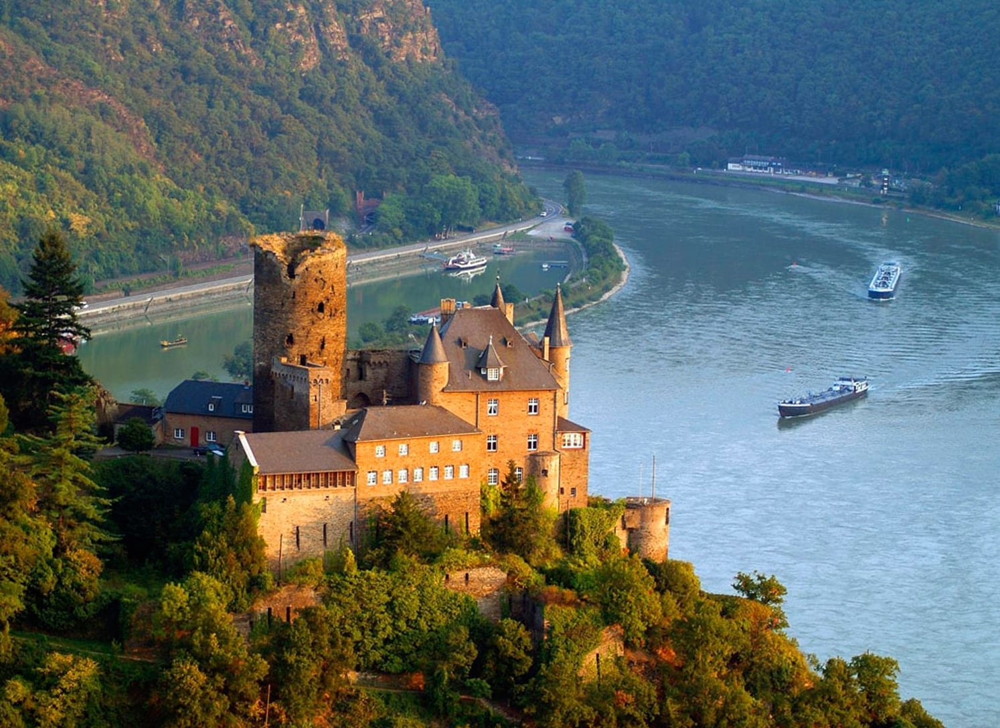

Pontos Turísticos
A Alemanha reúne paisagens deslumbrantes, cidades históricas e construções marcantes. Entre seus principais pontos turísticos estão o Portão de Brandemburgo, em Berlim, símbolo da reunificação alemã, e o Castelo de Neuschwanstein, na Baviera, famoso por seu visual de conto de fadas e inspiração para o castelo da Disney.
A Alemanha também encanta pela natureza, com a Floresta Negra, suas montanhas e vilas, o Rio Reno, famoso por castelos e belas paisagens, e o Lago de Constança, o maior do país, muito procurado por turistas que buscam cenários naturais, esportes aquáticos e cidades históricas à beira-d'água.
Já Colônia é famosa por sua Catedral Kölner Dom, uma das igrejas góticas mais altas da Europa.
Outro destino incrível é o Rio Reno, onde há muitos castelos e paisagens deslumbrantes ao longo de suas margens. E o Bodensee, conhecido em português como Lago de Constança, é o maior lago da Alemanha e faz fronteira também com Áustria e Suíça. É um destino muito popular para turistas que buscam paisagens naturais, esportes aquáticos e cidades históricas à beira do lago.
